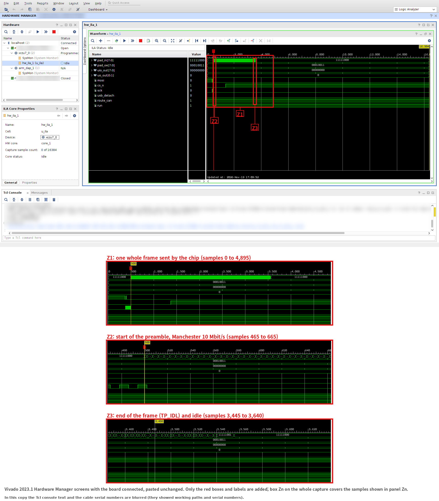
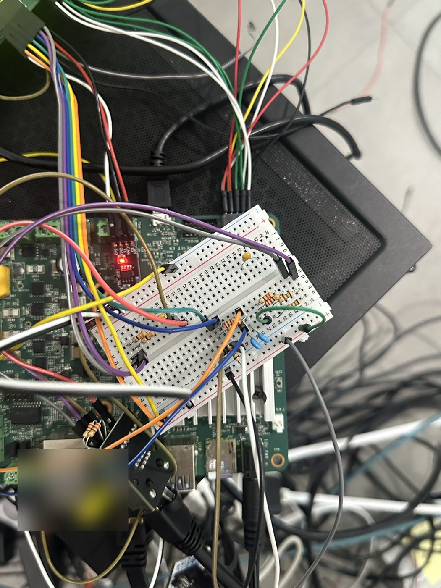

Board
The RTL of the submitted chip, without the shift unit added last, on a ZCU104 FPGA board at 50 MHz. The protocol pins leave on a PMOD connector and reach the other device through a breadboard. Each protocol below has two screens taken during the same run: the ILA at the chip's pads, and the other device's own tool.
Receipt of these runs: board_ila_gui_cc9fbbae_20261119. This is an FPGA, not silicon: the SRAMs are block RAMs and the pads are FPGA I/O.
SWD
Chip: debugger (swd_host_gen.pe). Other side: STM32G474RE on a NUCLEO-G474RE. Result: SWD: DPIDR 0x2BA01477, CPUID 0x410FC241, DBGMCU_IDCODE 0x20036469 during the ILA capture, STM32CubeProgrammer reads 0x20036469 at 0xE0042000


USB low speed
Chip: device (usb_dev.pe). Other side: a PC's xHCI host (Linux) behind a hub. Result: USB: 10 of 10 runs configured, kernel 'New USB device found 1209:0001'


CAN 2.0, 500 kbit/s
Chip: node (can_gen.pe). Other side: the KD240's CAN controller through a transceiver. Result: CAN 500 kbit/s: chip to KD240 4 of 4 acknowledged, KD240 to chip 3 of 3, TEC, REC and overruns 0


10BASE-T transmit
Chip: line unit u_eth with net.pe. Other side: a PC network card. Result: 10BASE-T: 20 frames sent, 20 in the PC's capture


The bench
Quick photos of the setup. Labels on the equipment are blurred.


